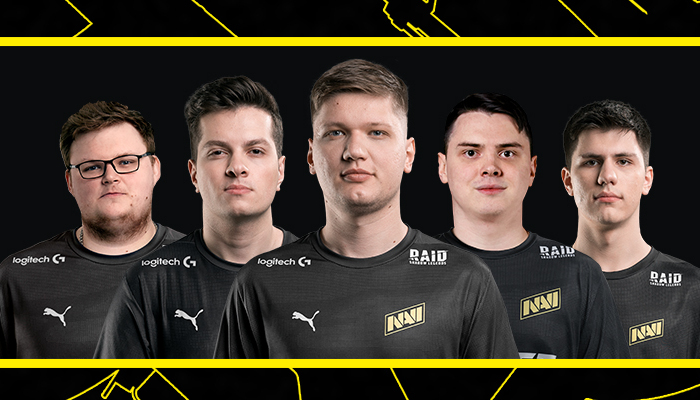

|
Место Guardian'a в NAVI занял Илья Perfecto, который успел зарекомендовать себя, выступая за команду Syman Gaming. Несмотря на нехватку опыта, Илья отлично подходит нашей команде по своему характеру, мышлению и стилю игры. Он молодой, талантливый и целеустремленный. Также отдельно хочется выразить благодарность Syman Gaming за максимально конструктивную позицию в переговорах. Илья "Perfecto" Залуцкий — 20-летний российский киберспортсмен, который начал свою карьеру в 2017 году, выступая за Atlantis Gaming. В октябре 2018 года он перешел в Syman Gaming, где и играл до сегодняшнего дня. С этой командой он смог отобраться на мейджор StarLadder Berlin Major 2019, а в конце прошлого года выиграл турнир NEST Pro Series 2019, который проходил в Китае. Если верить hltv.org, у Perfecto солидный рейтинг — 1.25. Однако тут стоит разобраться, за что он его получил. Впервые Perfecto заявил о себе на просцене в составе Atlants в 2018 году. В октябре игрока заметила команда Syman: под её крылом Илья принял участие в семи LAN-турнирах и прошёл на StarLadder Berlin Major. На отборочном СНГ-майноре Илья стал лучшим игроком команды с рейтингом 1,08. Успехи молодого игрока заметил B1ad3 и пригласил в стан Рождённых Побеждать.
Выступает за Natus Vincere с 24 января 2020 года. Если мы посмотрим на матчи Syman Gaming на NEST Pro Series 2019, где участвовали тир-2-3 команды, как TyLoo, то увидим, что в матчах с более-менее сильными командами Perfecto показывал средний результат даже среди игроков своей команды. Так откуда же взялась такая хорошая статистика? Perfecto играл очень хорошо в отборах на WESG, где показывал перфоманс со статой 18-0 против аматорских коллективов.Многие фанаты Ильи ищут perfecto cs go settings. Однако не будем судить только по нескольким турнирам. Давайте посмотрим, как Илья Залуцкий играл на тир-1 турнире StarLadder Berlin Major 2019. На мейджоре perfecto cs go settings показывал неплохую игру, но все равно не был очевидным лидером своей команды: только в одном матче из пяти он набил больше всего фрагов. Да и есть примечательный момент для тех, кто забыл, как развивались события на мейджоре. В решающем пятом матче за выход в топ-16 мейджора Syman Gaming столкнулись с Avangar. После того, как обе команды взяли по карте, коллективы играли решающую карту на Dust II. Каждый киберспортсмен играет на своих настройках, в том числе и Perfecto cs go settings. Честно говоря, подписывать не самого сильного игрока команды из топ-30 — это очень рискованная затея от менеджмента Natus Vincere. Однако будем верить, что статистика обманывает, а Perfecto сможет раскрыться в новой команде с новыми возможностями и сильными тиммейтами.  Дополнительная информация: |
|---|
Илья "Perfecto" ЗалуцкийNatus VincereМосква, Россия |
|---|